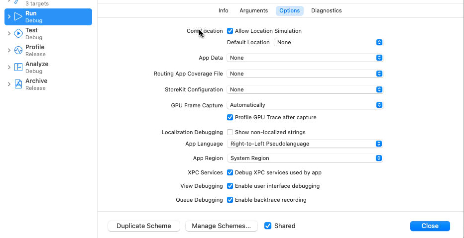

阿语环境界面元素采用从右往左的阅读方向。视觉适配阿语环境，通常是界面元素的Right-to-Left适配。
本文是RTL适配的简单记录。
启动参数
App按照系统语言来确定UI是否使用RTL。我们可以修改设备的系统设置语言，也可以修改Xcode中项目的启动参数。
设置的路径为”Edit Scheme“ - ”Run“ - ”Options“，如下图示：

如果你希望展示的是阿语的文本，可以选择”Right-to-Left Pseudolanguage With Right-to-Left Strings“。
如果你使用的是Auto Layout，并且约束时注意规避了使用left或right进行约束，那一般情况下，界面已经大体会按RTL的方式布局的了。
如果需要指定强制使用RLT布局，可以在AppDelegate中使用代码约束如下：
1 | class AppDelegate: UIResponder, UIApplicationDelegate { |
对于SwiftUI预览则可以使用environment进行约束：1
2
3
4
5
6
7
8
9
10
11
12
13
14struct ContentView_Previews: PreviewProvider {
static var previews: some View {
Group {
ContentView()
.environment(\.layoutDirection, .leftToRight)
.previewDisplayName("Left to Right")
ContentView()
.environment(\.layoutDirection, .rightToLeft)
.previewDisplayName("Right To Left")
}
.previewLayout(.fixed(width: 400, height: 200))
}
}
适配内容
Layout修改
如果使用的是Auto Layout，适配过程是相对简单的，使用leading与trailing替换left与right的约束。
如果使用frame布局，需要根据是否RTL，重新计算布局，工程量则繁杂得多。这对于一些技术历史背负重的项目而言，人力是个挑战。
图片适配
部分本地资源图片需要进行翻转（比如有方向指引性的），可以自行翻转UIImage，也有现成API：1
imageFlippedForRightToLeftLayoutDirection
文本对齐方式
视图布局约束正确了，但是文本对齐是另一个问题。需要根据是否RTL确定文本对齐方式。
参考官方文档介绍
Adjust text alignment to match the interface direction, if the system doesn’t do so automatically. For example, if you left-align text with content in the left-to-right (LTR) context, right-align the text to match the content’s mirrored position in the RTL context.
比如1
textLabel.textAlignment = .natural
可以根据需要调整。也可以通过hook的方式针对RTL的情况全局适配。
需要注意的是，系统渲染文本时会根据文本的Unicode编码所属语言区域进行调整。比如即使是布局正确且右对齐，如果文案内容是中文或英文，渲染时仍然按照LTR的方式渲染的，...文本截断的省略号仍然显示在右边。如果文本是阿拉伯文，则...文本截断的省略号显示在左边。
UICollectionView
UICollectionView在RTL下的适配，继承UICollectionViewFlowLayout 重写两个方法
1 | func effectiveUserInterfaceLayoutDirection() -> UIUserInterfaceLayoutDirection { |
评论